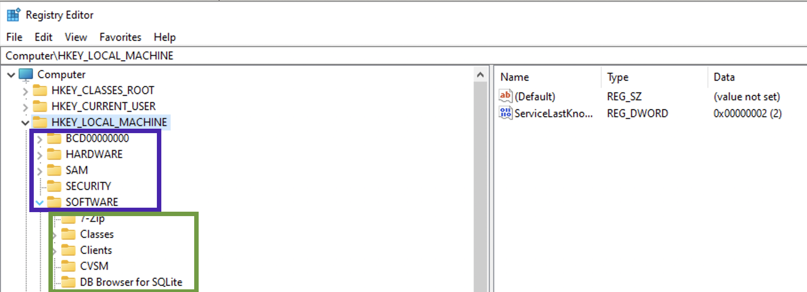
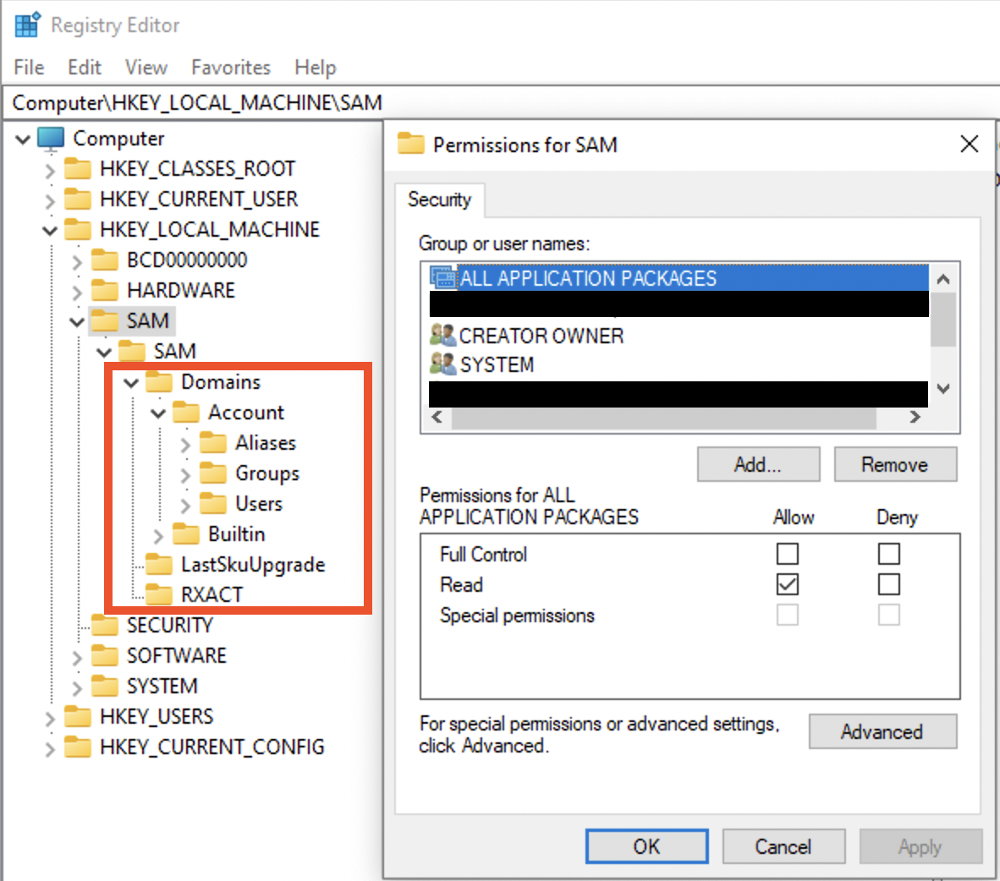
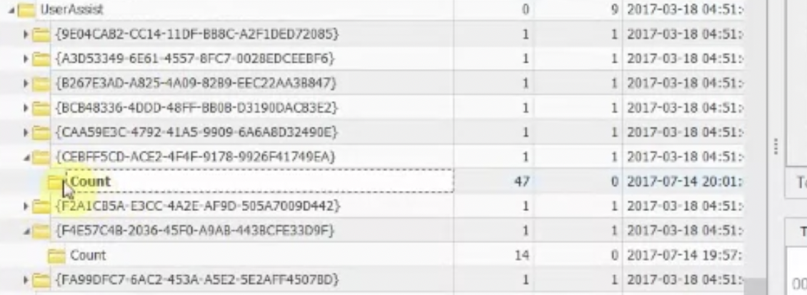
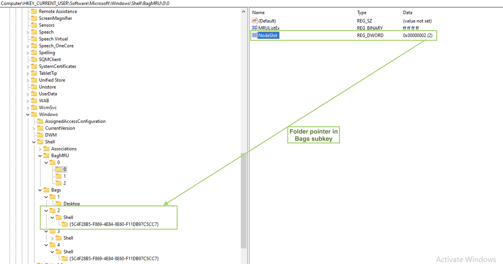

Registry is a repository for settings on a Windows machine. Prior to Windows NT, ini files were used. These were substituted with Windows registry to keep initialization and configurations. Some changes are also logged by the registry.
⚠️ If the OS was reinstalled, the registry is backed up (
windows.old) [5]. However, Windows.old is almost totally deleted after 28 days [9] .
🧪 ❓ Can registry hives be altered on a live system? What priviledges are required?
Structure
Hives are the first “folders” under the root folder. For example, under the root folder HKEY_LOCALMACHINE there is a set of folders. These are hives (purple rectangle). All the folders inside are keys and subkeys (green rectangle).

There are two types: system related files and user related. System related ⚙️:
- SAM
- System
- Security
- Software
- AmCache
User related (specific to this user) 👨💻:
- NT User.dat
- User Class.dat
When the OS boots up, it loads the handles to these hives into memory (HK... - handle key):
HKEY_LOCAL_MACHINE(HKLM)HARDWARE🍇
HKEY_CLASSES_ROOT(HKCR). Filled up at boot time with the data fromHKEY_LOCAL_MACHINE\Software\Classeskeys and data.HKEY_CURRENT_CONFIG(HKCC) 🍇. It’s a pointer toHKEY_LOCAL_MACHINE\System\CurrentControlSet\HardwareProfiles\Current.HKEY_USERS(HKU)HKEY_CURRENT_USER(HKCU) 🍇 . Information pulled fromNTUset.dat.
Some of the settings can only be found on a live system (🍇). SAM hive and all of its subkeys will not be accessible.
⚠️ There is no CurrentControlSet on a dead-box. To determine which one of the ControlSets is current, use Select\Current key (usually 1, which means ControlSet001). Last Known Goog is usually 2 (which means ControlSet002), used for recovery purposes.
Non-live registry (missing some hives) can be accessed from a disk image for example. C:\Windows\System32\config contains 4 main hives: SAM, System, Security and Software. C:\Windows\appcompat\Programs contains amcahce.hve. User-related files mentioned above can be found at C:\Users\%Username%\NTUser.dat and C:\Users\%Username%\AppData\Local\Microsoft\Windows\UsrClass.dat. So, those mysterious XXX.dat files are actually a registry file.
Get-ChildItem HKLM:Software | Format-Wide
SAM
Path to file 🛣️: C:\Windows\System32\config\SAM.
⚠️ This file cannot be edited through the RegEdit unless admin grants you permissions (data marked with red is not accesssible unless the access is granted by admin):

However, this file can be accessed on a dead-box system. ⚠️ Also, this file only stores local creds, not domain or Microsoft account credentials!
SAM is a database of files, and it stores all the information about all the users: login information, password hashes, group information.
🛠 Registry Explorer (Eric Zimmerman’s tool) can collect all user from the SAM and Profile files and show them assembled. This data can be exported to Excel, for example.
Local User Accounts
For each user there will be a separate sub-key under SAM\SAM\Domains\Account\Users. The sub-keys names are actually RID of the user in hex. Each sub-key will have several values. Record V contains static information (username, password length etc), while record F contains constantly updated information like timestamps 🕰:
- Last login is a little endian 8 byte value at
0x08-0x0foffset. - Last password change time at offset
0x18-0x1f, 8 bytes long. - Last failed logon time is at offset
0x28-0x2f, 8 bytes.
RID itself is stored here, in F record at offset 0x30-0x33 (little endian). Also, there is PasswordRequired (at 0x38). There several possible values for this nibble (half byte): 0 - account active + pass required, 1 - account is not active, 4 - any policies do not apply to this account.
🧪 I have
5on my machine, what does it mean?
Logon count is at 0x42-0x43 (two bytes).
The V value is more interesting. It contains usernames and hashes (NTLM). The user account name is at 0x1C0 offset (Unicode). What about the juicy stuff? I mean the password hashes. SAM file contains a 56-byte NTLM hash of the password, which is encrypted with a AES algo, the key 🔑 is stored in a system file. To decrypt the password, you’ll need both SAM and the system file. Password cracking methodology:
- Export SAM and SYSTEM hives from the forensic image/suspect machine.
- Unencrypt the hash stored in the SAM file (🛠
mimikatz). - Create a word list from the current case (may export from Autopsy, EnCase etc).
- Run a dictionary 📖 or brute-force attack 💪 against this NTLM hash (🛠:
hashcat🐈⬛ ,John the Ripper🔪, Cain and Able 🔪 🐏).
# decrypt the hashes:
mimikatz
> lsadump::sam /system:"path_to_SYSTEM" /SAM:"path_to_SAM"
# crack the hash with john (NTHash)
john --format=nt hash.txt
# crack the hash with hashcat (NTHash)
hashcat -m 1000 -a 3 hash.txt
# crack the hash with john (NTLMv1)
john --format=netntlm hash.txt
# crack the hash with hashcat (NTLMv1)
hashcat -m 5500 -a 3 hash.txt
# crack the hash with john (NTLMv2)
john --format=netntlmv2 hash.txt
# crack the hash with hashcat (NTLMv2)
hashcat -m 5600 -a 3 hash.txt
Other values stored in this sub-key. ForcePasswordReset speaks for itself and SupplementalCredentials do not. There also can be a UserPasswordHint, sometimes contains the actual password. It also contains RID, which can be changed in RID hijacking attack. There is also a technique that allows resetting local account password by clearing lmpw_len (LM password hash length) and ntpw_len (NTLM password hash length) at 0x2c and 0x30 respectively [8].
Microsoft Accounts
Since Win8. Can be logged in if there is internet access. Profiles and settings are stored in the cloud ☁️. Additional values are stored in SAM: InternetUID and InternetUserName. Both are unique to the user. InternetUID is a 16 byte Unicode string. InternetUserName - usually an email used as a login.
Domain Accounts ⚠️
Key 🔑 : Software\Microsoft\Windows NT\CurrentVersion\ProfileList.
The key above will have a ProfileImagePath.
⚠️ SAM doesn’t have any informaiton about domain accounts! See more info in software section, domain accounts.
Deleted Accounts
🛠 Registry Explorer (Eric Zimmerman’s tool) shows deleted accounts. If the data was not overwritten, we will be able to get the information.
Software
Path to file 🛣️: C:\Windows\System32\config\SOFTWARE.
System-wide information. All the below keys start with Computer\HKEY_LOCAL_MACHINE\SOFTWARE\. So, I’ll only show relative path, not full for simplicity’s sake. It contains configurations and information about software components of the system.
Installed programs and applications
Key 🔑: Microsoft\Windows\CurrentVersion\Uninstall. There can be some data for programs that do not exist on the system anymore. The last write time is when the application was installed.
Key 🔑 Microsoft\Windows\CurrentVersion\Appx\AppxAllUserStore for installed Microsoft applications. Defines between those that were installed for a specific user or system-wide.
Key 🔑: Wiw6432Node (SYSTEM hive root node) - those that run a 32-bit mode. Separate sub-keys for different versions of a program.
Key 🔑: Classes\Installer\Products - installed using Miscrosoft installer (those with msi extension).
OS Information
Key 🔑: Microsift\Windows NT\CurrentVersion. Value InstallDate - Install date, Unix, numeric value (for 🛠 Decode).
Network Information
Key 🔑: Microsoft\Windows NT\CurrentVersion\NetworkList - Wireless information. Profiles - network info by GUID, data first and last connected. Signatures - gw MAC address; contains Managed (managed, like a domain) and Unmanaged (like a PC and home router). Profile name - SSID or server. Description - usually the same as Profile name. Managed - 1 (connection to a server) or 0 (wireless router). Date Created - . Date last connected - . Both are Windows 128-bit SYSTEM structure (🛠 Decode).
Key 🔑: Clients\StartMenuInternet - default browser. Open the sub-keys to see installed browsers and their information. Last write timestamp - when they were installed on the system.
File association
Key 🔑: Classes. For each extension there is a OpenWith - suggestions, which program can be used. That’s the file association itself. OpenWithProgIDs - user-selected.
Key 🔑: Microsoft\Windows\CurrentVersion\Applets. Something that comes with Windows (built-in).
Login info
Key 🔑: Microsoft\Windows\CurrentVersion\Authentication\LogonUI - last logged in user.
Key 🔑: Microsoft\Windows NT\CurrentVersion\Winlogon. Manages the boot process, logging operations, loading profiles.
Attached devices
Key 🔑: Microsoft\Windows Portable Devices\Devices. For USB and other devices connected. The sub-key name contains the device’s serial number, name, disk ID (between {}), which is assigned by OS. This disk id can be used to track the device accross the system, for example, other registry values. But keep in mind, that not every USB device has a serial number. Dates and times - when the device was first inserted after the last reboot. FriendlyName - user-created name of the volume.
Key 🔑: Microsoft\Windows NT\CurrentVersion\EMDMgmt. It was put as an extension of memory (aka ready boost). Checks to see if the USB device can be used to extend memory. Timestamps - when first inserted. Some entries are ending with some decimal number, this is a volume ID in decimal (convert to hex and get your GUID that can be used to correlated data with USBSTR in SYSTEM hive, see below). These should be converted to hex and used to trace the device accross the system.
Key 🔑: Microsoft\Windows NT\CurrentVersion\Print\Printers for printers connected. This subkey may also contains some SIDs. I don’t quite understand yet, when this happens in general, but one case is when OneNote is used to share documets.
⚠️ Use information about USB devices from
SYSTEMhive to get more and validate this information.
Autostart locations
Key 🔑: Microsoft\Windows\CurrentVersion\Run and Microsoft\Windows\CurrentVersion\RunOnce.
There are two place for autoruns in SOFTWARE hive, both are system wide ❓
Uninstalled applications
Key 🔑: Microsoft\Windows\CurrentVersion\Uninstall
Domain Accounts
Key 🔑 : Software\Microsoft\Windows NT\CurrentVersion\ProfileList.
The key above will have a ProfileImagePath.
SAM doesn’t have any informaiton about domain accounts. For this information refer to the key above. Even though in case of a domain user there is no relevant information in SAM hive, you can still view the machine/domain ID in SAM and use it to determine whether the files were created on the local machine. For example, in the Recycle Bin.
System
Path to file 🛣️: C:\Windows\System32\config\SYSTEM.
Tools 🛠: Registry Explorer, Timeline Exlorer, AppCompatCacheParser, AmcacheParser, ShimCacheParser.py
Contains the following information, listed below. System-wide information. All the below keys start with Computer\HKEY_LOCAL_MACHINE\SOFTWARE\. So, I’ll only show relative path, not full for simplicity’s sake. This hive contains information about the system, devices attached, services running.
Current control set
Key 🔑: Computer\HKEY_LOCAL_MACHINE\System\Select\Current.
There are generally two ControlSets (specific settings): 001 and 002. The second one is generally used for recovery options. Which one is the current one? The one that is shown under CurrentControlSet in a live registry. But what about an offline one? Go to the key above and see which one is current. Then, choose ControlSet001 or ControlSet002 to get the data that is the most relevant at this point in time.
Memory Manegement
Key 🔑: ControlSet001\Control\Session Manager\Memory Management.
Value ClearPageFileAtShutdown shows whether pagefile.sys cleared at shutdown. This file contains some portion of RAM. 1 - cleared, 0 - not cleared.
Computer name
Key 🔑: Computer\HKEY_LOCAL_MACHINE\SYSTEM\ControlSet001\Control\ComputerName\ComputerName and Computer\HKEY_LOCAL_MACHINE\SYSTEM\ControlSet001\Control\ComputerName\ActiveComputerName. Can be either manufacturer or user-defined.
Last shutdown time
Key 🔑: Computer\HKEY_LOCAL_MACHINE\SYSTEM\ControlSet001\Control\Windows\LastShutdownTime
A 64-bit little-endian value, Windows FileTime. ⚠️ If the PC was shutdown due to some power source loss (plugged out), you won’t see this value being updated.
Crash dump setting
Key 🔑: Computer\HKEY_LOCAL_MACHINE\SYSTEM\ControlSet001\Control\CrashControl\DumpFile and --\\--\MinidumpDir.
Stores the location of *.DMP.
Services
Key 🔑: Computer\HKEY_LOCAL_MACHINE\SYSTEM\ControlSet001\Services
This is another Autorun location. Contains information that can be retrieved from a services utility on a live system: image path, display name and start type (boot, manual, auto). Parameters subkey contains ServiceDll value showing dlls loaded by this process. Can be examined to find rogue processes (see the Windows core processes page for more details for rogue process identification) or the processes information collection and analysis section. ❗️❗️❗️❗️❗️
Prefetch settings
Key 🔑: Computer\HKEY_LOCAL_MACHINE\SYSTEM\ControlSet001\Control\Session Manager\Memory Management\Prefetch Parameters
EnablePrefetcher will have either of the following 4 values:
0- disabled.1- enabled for applications only.2- enabled only for OS booting.3- enabled for both applications and boot process.
More about Prefetch in the corresponding article.
NtfsDisableLastAccessUpdate
Key 🔑: ControlSet001\Control\FileSystem\NtfsDisableLastAccessUpdate.
Last access file time settings. If 1 - disabled (default), 0 - enabled. ⚠️ If it’s disabled (more likely), the access times are not reliable in this case. However, this doesn’t apply to MFT file records updates.
NTFS Last Accessed Update (Win10+) -
80000000 (hex) = User Managed, Last Access Updates Enabled 80000001 (hex) = User Managed, Last Access Updates Disabled 80000002 (hex) = System Managed, Last Access Updates Enabled - default for Windows 11 (in my case). 80000003 (hex) = System Managed, Last Access Updates Disabled
System time
Key 🔑: Computer\HKEY_LOCAL_MACHINE\SYSTEM\ControlSet001\Control\TimeZoneInformation\TimeZoneKeyName
USBs
Key 🔑: ControlSet001\Enum\USBSTOR or ControleSet001\Enum\USB (on my Win10 VM)
Key 🔑: MountedDevices - used to map devices to drive letters (not only USBs).
Contains ever connected USBs with their serial numbers (if they have these) and some additional information. 0064 - first installed, 0065 last installed, 0066 last arrival and 0067 last removal. The full path: Computer\HKEY_LOCAL_MACHINE\SYSTEM\ControlSet001\Enum\USB\ROOT_HUB20\4&3af74d6&0\Properties\{83da6326-97a6-4088-9453-a1923f573b29}\. ⚠️ Note that ROOT_HUB20\4&3af74d6&0 is device specific, but {83da6326-97a6-4088-9453-a1923f573b29} is not.
⚠️ To view
Propertiessubkey admin 🧑💼 privileges are not enough for the live-registry. Install psexec and elevate to system by running the folling command from thepsexecfolder:.\PsExec.exe -i -s -d powershell.exe. In the PowerShell window that opens runregedit.
Device Parameters\PartMgr - gives a disk ID. PartitionTableCache may contains … surprise-surprise… a partition table! Wow… . For a GPT locate FF FF FF FF 00 00 00 00. 16 bytes right after that are for file system GUID. The next 16 bytes are unique volume GUID used to identify the volume accross systems as well as within one. It might be empty for a USB device. ContainerID - very important, can be used to filter event logs.
As for the MountedDevices… . If a device doesn’t have a serial number, it’ll be assigned a machine assigned number aka unique instance ID (not consistent accross multiple systems). If the second character is & - not a a serial number.
❓ How do I find it? Lot’s of gibberish is all I see…
✍️ Just find the device name, search for the
#sign, check after it and up until the next#right before a GUID contained withing{}.
This is an example of a USB device with a serial number that will be reletively unique (not all vendors borther giving each USB drive a separate serial number).

And here is an example of a machine assigned id. Note, that the second symbols is &.

The value that follows the serial number/uniqueid right after the second # and encolsed between {} is the disk id.
AppCompatCache aka ShimCache
Key 🔑: CurrentControlSet\Control\Session Manager\AppCompatCache\AppCompatCache.
🛠: ShimCacheParser.py (requires Python2), AppCompatCacheParser
Originally was used to identify compatibility issues between 32 and 64 bit progs. Track the file path, size, last modified time ⏰. Only logs specific file extensions. It might not be a reliable evidnce that the program was executed or even installation, but if the program was installed and deleted - it won’t be deleted from here. ShimCache is another name for this artifact. Uses file system timestamps.
If the executable is modified or renamed, new entry will be created, but modified date and time will be the same for both files even after these actions take place. $UsnJrnl is another place to make sure that is what had happened. $Logfile.
⚠️ Written at shutdown!
⚠️ Doesn’t track the file execution for Win7+ systems.
BAM
Key 🔑: ControlSet001\Services\BAM.
⚠️ Windows 10 only!
Background Activity Monitor. Organaized by user SID. Windows apps’ names are not parsed very well here. Gives last executed time ⏰ , 64-bit little-endian (first 8 bytes of the value). It does prove program execution and it ties it to the specific user. May use the same technique for core processes analysis and identifying rogue processes like in RAM.
NT User
Path to file 🛣️: C:\Users\%Username%\NTUser.dat.
Key interesting for a forensic examiner are listed below.
Recent documents
Key 🔑: NTUSER.DAT\SOFTWARE\Microsoft\Windows\CurrentVersion\Explorer\RecentDocs
Contains the list of all recent documents as a bunch and also the same data sorted by extension. MRUListEx is list. It has a number of 4 byte values, each noting the sequence number of a document. It starts from the document’s number that was accessed some time age (first in the list) and ends with the most recently used one. This key also has a list of recently accessed folders.
⚠️🔎 I only had a short binary data stream under the
ViewStreamsubkey.
Typed URLs
Key 🔑: NTUSER.DAT\SOFTWARE\Microsoft\Internet Explorer\Typed URLs. Timestamps are at TypedURLsTimes.
⚠️ for Internet Explorer only, holds up to 25 entries. Since it’s used for InternetExplorer only and Internet Explorer is dying, most likely this artefact is “fading in the past”.
User assist
Key 🔑: NTUSER.DAT\SOFTWARE\Microsoft\Windows\CurrentVersion\Explorer\User Assist.
List of progs and applets that can be quicly started from the Start menu for usability, the most often used items. Shows a focus count for each entry. It means, how many time was the window switched to (that doesn’t include the time when the program is first run). Shows the last time that the program was executed, focus time, run count.
At the start of each entry between {} is the code for a location within file system. Registry Explorer will substitute these automatically, since these GUIDs are predefined.
This what a full filled User Assist key looks like. {CEBFF5CD-ACE2-4F4F-9178-9926F41749EA} is for programs that were lauched using their image files directly. {F4E57C4B-2036-45F0-A9AB-443BCFE33D9F} is for those, started with a shortcut.

The structure is quite simple:
- At
0x04offset starts the number of executions (4 bytes). - At
0xCoffset starts the focus time (4 bytes) - At
0x3Coffset starts the Last Execution time (8 bytes), which is a Win64-bit little-endian value (for Decode 🛠).
⚠️ 🔎 I could not find this key on my Win10 VM.
⚠️ When the program was started via
lnkfile, the focus count will be0.
Recent Apps
Key 🔑: NTUSER.DAT\SOFTWARE\Microsoft\Windows\CurrentVersion\Search\RecentApps.
Similar to User Assist. Also shows files and applications that were used through this application. This key consists of sub-keys that are marked with application’s GUID. Some of them will have Recent Items sub-key (10 max), each has Last Write Time (Windows 64-bit, little-endian).
⚠️ Not all Win10 machines will have this key.
Key 🔑: Software\Microsoft\Windows\Current Version\Explorer\RunMRU.
A list of the programs that have been run from the Run command is shown. Each time you use a command that has already been stored, it moves to the top of the list.
Jump List Data
Key 🔑: NTUSER.DAT\SOFTWARE\Microsoft\Windows\CurrentVersion\Search\JumplistData.
Shows applications accessed.
Run/Run once
Key 🔑: NTUSER.DAT\Software\Microsoft\Windows\CurrentVersion\Run,Computer\HKEY_CURRENT_USER\Software\Microsoft\Windows\CurrentVersion\RunOnce.
For that particular user. System-wide autoruns are stored in HKLM_LOCAL_MACHINE\SOFTWARE. The keys are ignored if the PC is started in a safe mode. ⚠️ However, if the value in RunOnce is prefixed with an asterisk (*), it will run even in the safe mode!
Word Wheel Query
Key 🔑:NTUSER.DAT\SOFTWARE\Microsoft\Windows\CurrentVersion\Explorer\WordWheelQuery (Win7, search from the start menu), NTUSER.DAT\SOFTWARE\Microsoft\Windows\CurrentVersion\Explorer\SearchHistory\Microsoft.Windows.FileSearchApp (Win8, search from the start menu), Users\%USERNAME%\AppData\Local\Micorsoft\Windows\ConnectedSearch\History (Win8.1, stored as individual lnk files, contains file date and times, items accessed from the charms bar (aka Start menu)), NTUSER.DAT\SOFTWARE\Microsoft\Windows\CurrentVersion\Explorer\WordWheelQuery (Win10, searched from File Explorer).
⚠️ On Windows 10 search terms that are typed into the charms bar are tracked by Cortana in a dedicated DB outside the registry.
Search history of the Start menu and Windows Explorer (MRU order - most recently used), last accessed date, search terms typed by user.
🔎 I could not find this key on my Win10 VM.
🧪 I could not find some of the above mentioned keys on my Win10 VM. I tried both
HKEY_LOCAL_MACHINEandHKEY_CURRENT_USER.
ComDlg32
Key 🔑: NTUSER.DAT\Software\Microsoft\Windows\CurrentVersion\Explorer\ComDlg32.
CIDSizeMRU- Tracks applications globally. MRU start at zero. Timestamp for the most recent item only. FirstFolder -tracks the install locations of applications, full path to the app, but no exact file name. OpenSavePidMRU - tracks files that were saved with Save As dialog, or opened with Open dialog. Tracks autocomplete terms. LastVisitedPidMRU - tracks the specific executable used by an application to open the files documented in the OpenSaveMRU key. Also tracks the directory for the last application accessed for each file in OpenSavePidMRU, tracks the location the file existed.
Typed Paths
Key 🔑: NTUSER.DAT\Software\Microsoft\Windows\CurrentVersion\Explorer\TypedPaths.
Files and directories that were accessed by typing address in File Explorer.
Office MRU
Key 🔑: NTUSER.DAT\Software\Microsoft\Office\XX.X.
You might see if there were several versions of Microsoft Office installed. Expanding Word|Excel|PowerPoint etc and looking at the entries, they have a Txxxxxxxx in the middle. That’s time (Win64 big-endian, UTC).
Mounted Devices
Key 🔑: MountPoints2.
If you connect volumes from a system-wide MountPoints (above) and USBSTR, we can connect a device to a specific user.
UsrClass.dat
Path to file 🛣️ : C:\Users\%Username%\AppData\Local\Microsoft\Windows\UsrClass.dat. Specific to the user.
Each key 🔑 below starts with UsrClass.dat for an offile-registry and HKEY_CURRENT_USER for a live registry. Try omitting Local Settings if you can’t find the keys mentioned (at least, for live registry).
For the beloow
ManagedByApp
Key 🔑: Software\Microsoft\Windows\CurrentVersion\AppModel\SystemAppData\Microsoft.Windows.Photos_8wekyb3d8bbwe\PersistedStorageItemTable\ManagedByApp.
Tracks images opened with Microsoft application. Shows volume GUID (use other USB-related registry to assemble the picture), file path, data and time ⏰. LastUpdateTime shows when the files was … . This date and time is very close LastInteracted from ShellBags. Go to MountedDevices in SOFTWARE hive to find the device by the volume GUID and the to SYSTEM’s USBSTR -> PartitionTableCache.
This information is very useful for child abuse cases.
MUICache
Key 🔑: Local Settings\Software\Microsoft\Windows\Shell\MuiCache.
Installed and executed applications for that particular user. But no timestamps for this acts, only last write data and time for the key in registry.
ShellBags
Key 🔑 : Local Settings\Software\Microsoft\Windows\Shell\BagMRU . Values: MRUListEx, NodeSlot, Subkeys.
Key 🔑 : Local Settings\Software\Microsoft\Windows\Shell\Bags. Values: Shell, will have folder’s GUID.
Created On: when the folder was created/moved/renamed. Last accessed and created are sometimes the same. Last modified is when the preferences were last changed (window resized, view options changed). Mind if it’s utc or gmt. Also, this data might be updated with a little lag. Last key write time is the ShellBag’s timestamp.
⚠️ Shortcuts MAC times are not updated!
⚠️ Fat16 only records date. No time. So the
Last accessedtime for a fat16 formatted folder will be00:00:00.000. It’s more usual for a USB removable media.
Created On, Modified On and Last accessed on are all FS timestamps ❗️❗️❗️ However, Registry last write time is its own timestamp and it seems to be updated even when no preferences were changed.
Track Windows folder settings (how the view is set), track zip files, folder access, even if information was deleted. Can also show folders on removable media. This data is a little bit confusing at first, but can be digested in a couple of minutes. One important thing to note is that both keys are interconnected. I’ve used arrows, squares and circles to mark data corresponding to each for better visualization on the picture below. Sometimes, additional info for NTFS filesystem will be available (MFT record number) and file system type as well, not always however.
⚠️ Proves that the user interacted with these folders if they are found in ShellBags but not on the system.
❓ How about when being hacked? A hacker might delete the folder.
Right under BagMRU subkey, there is only one subkey (in this case, in case of shell bags, a folder): 0. MRUListEx contains a list of folders inside this one identified by sequence numbers. In our example there are only three subfolders (and, hence, values in the list) in this folder: 00 00 00 00, just 0 in little-endian (green), 01 00 00 00, just 1 in little-endian (orange) and 02 00 00 00, just 2 in little-endian (purple). Above the MRUListEx there are three values in our case, each corresponding to the subfolder and containing a folder path and name. In the example below the 0 subfolder’s value is expanded and marked with a green circle.
Each of these folders in the list will have a corresponding subkey inside our 0 subkey/folder (marked with arrows on the left).

So, we have a parent folder info, what folders it contains and the paths to them. Now, since ShellBags store folder settings, where are they? Under the second subkey, Bags. But since sequence numbers are used here as well, how do we find the folder we need? Are these sequence number the same as on the picture above? The answer is no. On the picture above numbering restarts from 0 for each folder’s subfolders, so that each folder that has at least one subfolder, will have at least 0 value and a 0 subkey. However, the Bags subkeys numbers folders sequencially. Each subkey representing a folder in a BagMRU subkey we’ve seen above, will have a value NodeSlot. This is a number it’s identified by withing Bags subkey. See the below example for the folder 0.

🛠 ShellBagsExplorer (E. Zimmerman) is a tools that helps automating this process which is useful for larger amount of data.

The above is an example of the ShellBagsExplorer for my Windows 10 Parallels VM. Pretty user-friendly representation and lot’s of valuable information. Note the folders on the very top: \\Mac\vm, \\Mac\Home and \\Mac\AllFiles. Someone who is using Paralells Windows 10 on Mac might note this at once, that this is a VM running on a Mac. Also, both \\Mac\Home and \\Mac\AllFiles are no longer available for Windows 10, but they were not deleted from the registry as you may see. That’s because when folders are deleted, they are not deleted from here, at least not soon.
AmCache
Path to file 🛣️: C:\Windows\AppCompat\Programs.
Since Windows 8. Stored information about program execution, including those, that were run from a USB drive. Contains install date and time, name, version, path to exe/dll, source info, path to uninstall, publisher name, volume GUIDs, container ID of the device from which the program was run.
DeviceCensus - some information about the physical machine itself. For example, for my Parallels VM there was also a VM subkey that contained some value VMId.
File. Full path to the executable.
⚠️ Not present on my Windows 10 (Parallels VM).
InventoryApplication. Consists of folders/subkeys named by the program id. Each folder will contain the following important information: OSVersionAtInstallTime, InstallDateMsi, InstallDate, InstallDateArpLastModified, InstallDateFromLinkFile, Name, Publisher, RegistryKeyPath (may show user SID), Source, UninstallString, ProgramID (consistent accross systems).
⚠️ On my Parallels Windows 10/11 machine I noticed that here not only Windows, but also Mac executables are listed even though I have specifically set in preferences that I am not sharing Mac folders or disks with the VM.
InventoryApplicationFile. Contains a fileid which is actually a SHA-1 hash, padded with 4 leading zeros and full path to the executable. Use a list of known good or VirusTotal.
InventoryDeviceContainer. Contains ModelName and FriendlyName. When devices get connected, they might install some software to be able to work correctly.
InventoryDevicePnp. Contains ContainerID, DriverID, Description, Manufacturer and Model.
Programs. Where this program is located within the FS and the source (for example, AddRemoveProgram). And also information path to the uninstaller in registry.
Tools 🛠: AmCacheParser.exe + Timeline Explorer.
AmcacheParser.exe -f <path_to_AmCache.hve> -i on --csv <export_to_folder_no_quotes> --csvf <desired_filename>
What are unassociated files? Those that are not associated with a known source. Good starting point when looking for bad files.
⚠️ In my case on a macOS with Parallels and Windows 10 installed, this evidence also contained mac executables.
References
[1] Windows registry file format specification
Suhanov’s blog: [2] Exporting registry hives from a live system, [3] Containerized registry hives in Windows, [4] Hiding data in the registry
[5] Coursera, Windows OS Forensics
[6] Windows 10 vulnerability with the access to SAM
[7] Registry structure
[8] Analysis the Structure of SAM and Cracking Password Base on Windows Operating System, Jiang Du and Jiwei Li
[9] What does Windows.old folder contain?
[10]